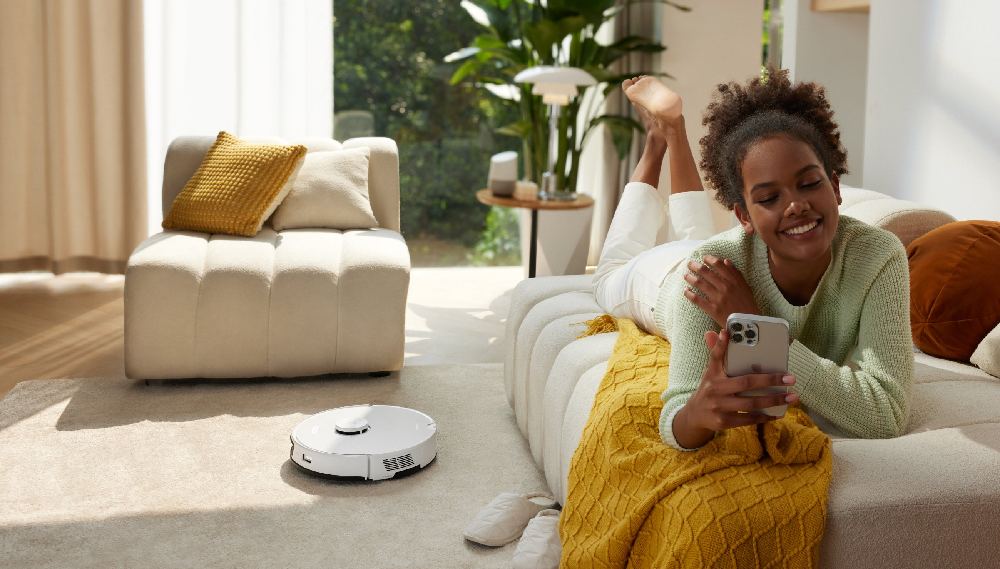
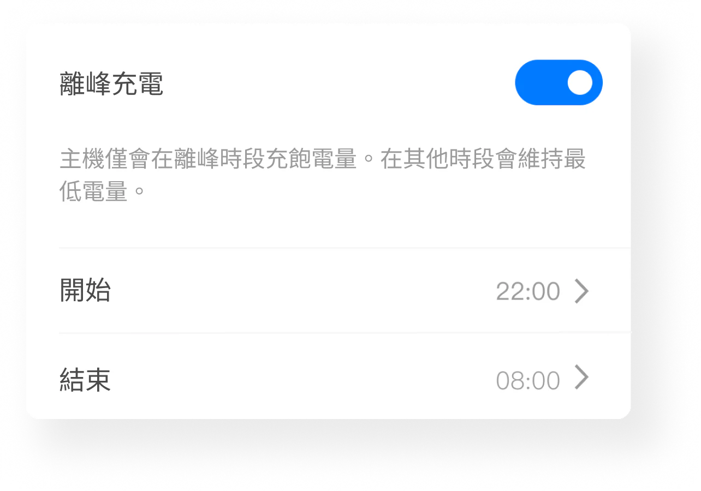

Roborock App 快问快答：机器人扫得干不干净，App 说了算
石头机器人到手后，App 里哪些设置必须改、哪些坑别踩、怎么让它自己干活——一篇速查帮你省半小时翻说明书的时间。
整理一篇关于 Roborock App 的快问快答。机器人硬件买回家只是第一步，App 里的设置、地图、自动化才是决定它扫得干不干净、省不省事的那一半。下面的问题都是实际用下来发现大家真会问的。
Roborock App 到底是干什么的？
一句话：它是石头机器人的遥控器 + 地图编辑器 + 自动化调度中心。机器人本身没有屏幕，所有清扫模式选择、房间划分、禁区标注、定时任务、耗材提醒，全在这个 App 里操作。想确认自己的机型支不支持这些功能，可以去roborock官网查一下完整的机型兼容性列表。没有 App，机器人开机也能扫，但你没法让它只扫厨房、也没法让它凌晨趁电价低的时候自己去充电。对于多台设备的家庭，App 还是多机器人统一管理的入口——同一个账号可以同时看几台机器人各自的地图和状态。
谁需要 Roborock App，只买了机器人还不行吗？
只开箱的话，机器人按一下机身上的启动键就能扫。但如果你想让它长期好用，App 几乎是必需品。几个绕不开的场景：App 从官方下载拿就行，首次配网必须用 App 添加设备；机器人自动分的房间边界大概率要手动调，不然客厅和餐厅被当成两个房间反复扫；定时清扫、离峰充电、勿扰时段这些自动化功能，离开 App 都设不了；滤芯、边刷、拖布的耗材提醒和更换周期，也是 App 在管。海外地区的用户如果用 Alexa 或 Google Home 语音控制，也要先在 App 里绑定账号才能对接。

注册时地区选错了怎么办？
这是新手最容易踩的坑，改起来也最麻烦。不同地区走不同的服务器和账号库，注册完成后设备直接归属当前地区的账号体系——选错了地区，可能搜不到自己的机型、手机号验证码收不到、甚至设备绑定不上。推荐按实际所在地区选，别照搬教程里的地区选项；注册用常驻手机号，别用临时号，因为设备绑定、找回密码、家人共享都挂在这个号上。如果已经选错了，注销当前账号重注册是最干净的做法，但先确认机器人还没被绑定到旧账号，不然解绑要走客服流程。
地图编辑到底能改什么，机器人自己分的房间不行吗？
机器人自动分房间是靠激光扫描的算法判断，客厅连着餐厅的户型经常被切成两块、过道被算进卧室、甚至阳台被当成独立房间反复扫。编辑房间功能就是纠正这些误判的工具，详细的操作步骤在roborock文档里有图示。三种操作最常用：合并（餐厅客厅连体就合并成一个大房间）、分割（自动分得太大块的手动画线切开，切线尽量沿着真实墙体走）、命名（把「房间 1」改成「儿童房」，后面例行清洁、语音控制、房间级设置全都靠名字认）。改完保存立刻生效，但正在进行中的清扫不受影响——下一次清扫时机器人会重新校准边界。
离峰充电是什么，真能省电费吗？
执行峰谷电价的地区，充电时段本身就是钱。离峰充电功能让机器人只在指定窗口把电充到 100%，窗口外维持最低电量待命，不会「充满后掉一点再补满」地无效循环。这样机器人的主要耗电被整体搬进低电价时段，白天缺的电回充也只是维持量。设置方法很简单：设备设置里打开离峰充电开关、填起止时间。有一个隐含约束要注意：清扫任务最好排在窗口后段或窗口外，如果例行清洁定在 7:30 而充电窗口到 8:00 才结束，机器人可能带着最低维持电量开工，跑一半就中途回充。每天两次短峰谷差小的地区这项功能收益有限，开着也没坏处。

语音控制能用吗，喊一声就出门干活靠谱吗？
能用，但要摆对期待。语音控制适合发起和查询——说「开始清扫」「暂停」「回充电座」或者按房间名喊「扫一下儿童房」都行，也能问它扫没扫、电量多少。但精细操作就别指望语音了，画禁区、改例行任务这些还是要回 App。国内用户如果走米家生态的机型，可以在米家里给石头设备配语音指令；海外用户走 Alexa 或 Google Home 的路线，在语音助手 App 里搜对应技能、绑定账号、授权设备同步，跟着引导点就行。Siri 用户可以把 App 内的操作录成快捷指令，喊 Siri 触发特定清扫任务。
例行清扫怎么设，扫完了它自己会回去吗？
例行清扫是让机器人自动干活的核心功能——设定好时间、清扫模式、要扫的房间，到点它自己出门、扫完自己回充电座。搭配离峰充电和勿扰时段一起用：充电窗口设在凌晨，例行清洁定在窗口结束后半小时，满电出门扫完直接回充，整个过程完全不用人管。例行任务可以设多条，比如工作日早晚各一次、周末加一次深度清洁，每条各自配房间列表和模式。如果家里有地毯区域，记得在对应房间设置里标记地毯材质，机器人扫到地毯会自动加大吸力。
禁区和虚拟墙是一回事吗，怎么用？
不是。虚拟墙是物理阻隔的替代——在地图上画一条线，机器人永远跨不过去，适合不想让它进的区域。禁区是一个矩形区域，机器人可以路过但不会在里面清扫，适合临时撒了东西不想让它去搅、或者地毯上有易碎品这类场景。两者都在地图编辑菜单里，画完保存立刻生效。还有一个延伸操作是「指定清扫」——在地图上圈一个区域让它只扫那里，比让它全屋跑一遍效率高得多，适合打翻了一杯咖啡这种局部应急清洁。
多楼层的房子，机器人能记住不同楼层的地图吗？
能，但要看机型和固件版本。开启多楼层功能后，每次机器人被搬到新楼层，它会重新扫描并保存一张新地图，下次再搬回来自动切对应楼层的地图。注意多楼层不是所有机型都支持，老固件也可能没有这个功能——先在 App 里看一下设备设置里有没有多楼层相关选项，没有的话先更固件。每台机器人存的地图数量有限，一般 3~5 张，超过了要删掉旧地图才能存新的。
最后一句：Roborock App 不是锦上添花的配件，是让机器人从「能用」变成「好用」的关键。花半小时把地区、地图、自动化设好，后面大半年它自己就能把地板维持在能光脚踩的状态，值得这笔投入。相关的操作指引和资料也同步托管在GitHub、Gitee、GitCode 三处，国内网打不开 GitHub 的朋友可以直接去 Gitee 或 GitCode。